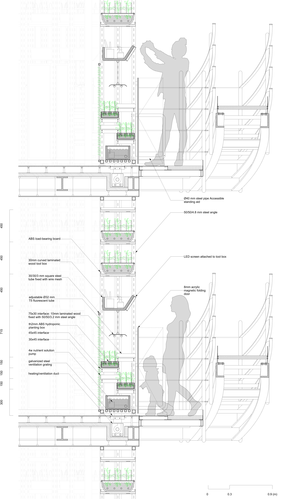

三山五园文化中心（本科毕设）
-
项目的灵感来自于场地曾是清代帝王进行耕作问农的场所，因此想以一个地下现代农作博物馆的形式来延续场地文脉。
1.人因设计
基于人因实验研究的结果，我遴选出了4个让体验者背部肌肉能够适当增加能量消耗，但不至于损害健康的界面进行细部设计。其目的在于通过“不舒适”来增强农作活动的具身性体验。根据人体工学标准，该设计考虑了可调节照明和储物功能等因素。在人体左侧设置了一种辅助装置，以解决左侧肌肉更易疲劳的问题。
2.细部构造
细部构造除了要考虑人与空间的互动，还需满足作物生长所需的设备空间。因此，设计中以角钢作为主要结构材料，实现了从装置到空间结构的延展。种植系统采用滴灌装置，通过30cm以下的容器中的水泵提供培育所需的营养液。地板通风系统则用于满足作物生长所需的温湿度条件。可调节照明系统可适应不同界面的高度需求。在75cm处设置了一个便于站立的辅助设施，专为右利手人群设计。在160cm处的工具箱上安装了一块LED屏幕，用于实时显示作物生长情况、环境中的CO2浓度等信息。
3.体验设计
按照作物生长的时间段进行了4个场馆的划分：育种、播种、维持和收获馆。这样游客就有多次来到该场馆体验的理由。由于育种室无需光照，且环境条件与其他阶段明显不同，因此单独设为一个新的馆，在空间形式和体验上和其他场馆进行区分。
-
设计类型: 人本设计，人因设计，建筑设计，交互设计
项目类型：清华大学建筑学院本科毕业设计
时间: 2022.3-2022.6
指导：张利教授，清华大学建筑学院院长，teamminus
合作: 独立完成
主要贡献:
1.根据作物生长周期划分四个场馆进行体验设计；
2.根据实验结果得出的偏差界面设计交互装置，并将装置拓展为建筑结构；
3.为每个交互装置设计UI界面展示作物生长信息以及环境信息；
获奖: 清华大学建筑学院本科毕设A等作品
技能：rhino、EMGworks、SPSS、AutoCAD、Adobe Illustrator、Adobe Photoshop、Enscape


